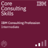
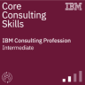
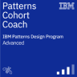
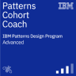

About
I am a Product and Interaction Designer, Design Thinking and DesignOps Educator and Certified Cloud Practitioner with over 16 years of professional design experience in industries ranging from small to large business, non-profits, finance, Canadian government, natural resources, and entertainment.


 
 

In 2008, I graduated with an advanced diploma in interaction design from Algonquin College of Applied Arts and Technologies. My specialties include research and usability initiatives, user–focused product design, and design system programs for search based threat hunting and data ingestion across multiple security products and platform services.
I currently lead research and usability initiatives, user–focused product design, and design system programs for search based threat hunting and data ingestion across multiple security products and platform services.
In my spare time, I coach teams on Enterprise Design Thinking, DesignOps, project management, design business acumen and digital optimization best practises to empower measurable user–focused outcomes.

Above: Hands The Family Help Network
Heuristics Assessment, Future State Mock-ups and AI-based Virtual Agent Implementation
Prior to joining The Company I worked with clients including The Federal Government of Canada, Canadian Imperial Bank of Commerce, The Canadian Real Estate Association and others.